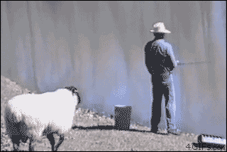

<link rel="import" href="https://polygit.org/components/polymer/polymer.html">

<dom-module id="proto-element">

  <template>
    <p id="sheep1">sheep!</p>
    
  </template>

  <script>
    Polymer({
      is: "proto-element",
      // Called when the element has been created, but before property values are set and local DOM is initialized.
      created: function() {
        console.log(this.localName + '#' + this.id + ' was created');

        var url = this.resolveUrl('./gangnam-loop2.ogg');
        console.log(url);

        var a = new Audio();
        a.src = url;
        a.autoplay = false;
        a.loop = true;
        a.load();

        this.gangnam = a;
      },

      // Called after property values are set and local DOM is initialized.
      ready: function() {
        console.log(this.localName + '#' + this.id + ' has local DOM initialized');

        this.gangnam.play();
      },

      // Called after the element is attached to the document.
      attached: function() {
        console.log(this.localName + '#' + this.id + ' was attached');
      },

      // Called after the element is detached from the document.
      detached: function() {
        console.log(this.localName + '#' + this.id + ' was detached');
      },

      // Called when one of the element's attributes is changed
      attributeChanged: function() {
        console.log(this.localName + '#' + this.id + ' attribute ' + name + ' was changed to ' + this.getAttribute(name));
      }
    });
  </script>

</dom-module>